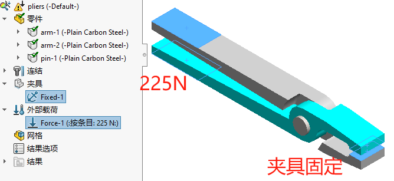
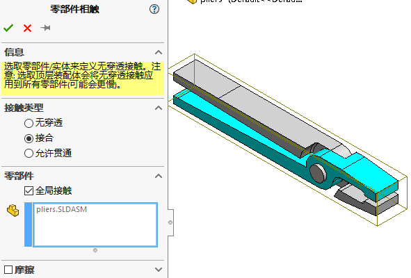
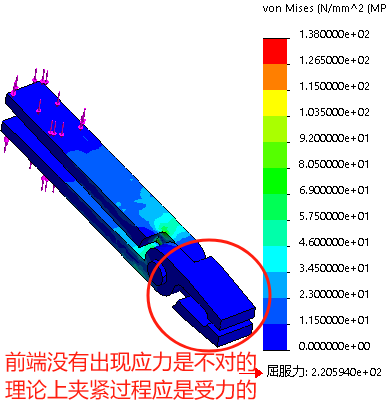
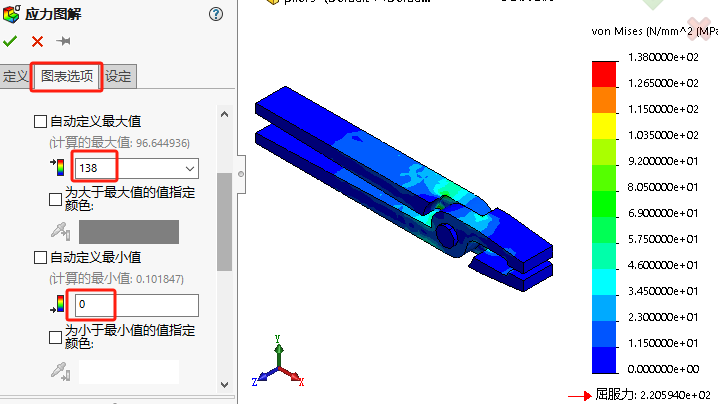
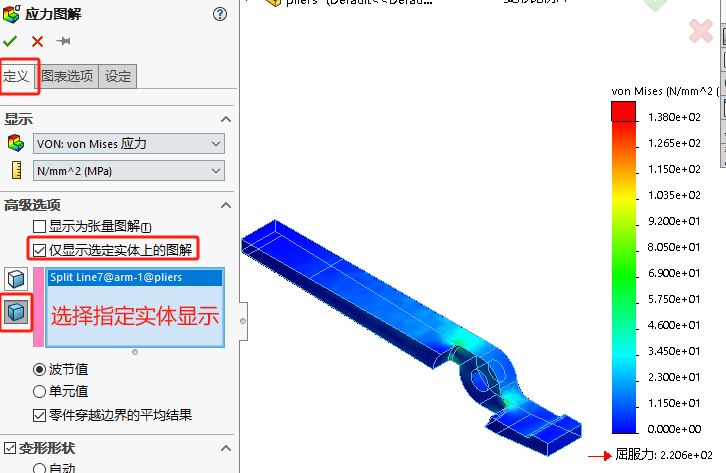
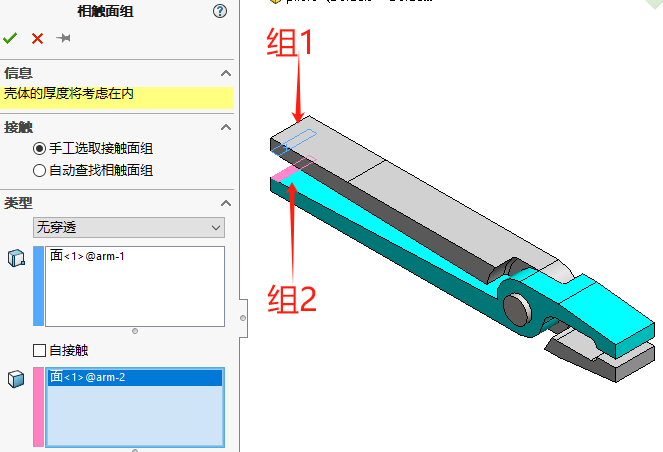
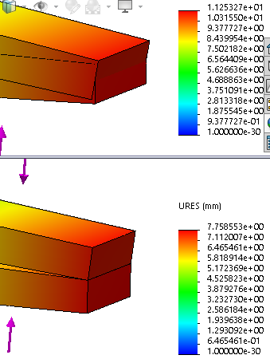

Simulation-装配体接触
前面几章的分析是在零件单实体的情况下进行的，那如果是多实体或是装配体情况下。我们就可能会需要考虑零件和零件之间的接触影响，因此本章将带大家来看一个“带接触”的装配体分析案例。
为何需要接触分析
1、装配体的配合不会转移到的接触定义中。因此从分析的角度来看，装配体的零件一开始都是分离的，悬浮的，这会造成“大位移”结果出现。
2、接触条件允许零组件之间相互作用更真实，避免仿真的和“干涉”出现；
3、在两个相似的刚度值零件之间，使用接触相互作用是较好的， 而不是以负载/拘束条件方式作用于零件上
装配体分析中的关键步骤：
1)应用材料:可以一次性对所有装配体添加材料，也可以分别添加。
2)添加夹具:和零件一样
3)添加接触:
零部件接触：在没有特别指明局部接触条件的情况下，零部件接触条件用来指明零件或子装配体是如何接触到一起的，或如何相互作用的。
局部接触条件:局部接触条件会取代零部件接触条件。
4)应用网格控制:
5)划分网格。
6)运行分析。
接合接触
分析案例：虎钳。材料:合金钢。分别将225N的“挤压”力作用在钳臂的末端，平板短边两侧固定。求解模型，并查看位移和应力分布情况。
新建算例
打开虎钳模型，并新建静应力算例。
材料：在仿真树内的零件实体添加【普通碳钢】材料
夹具和载荷
零部件接触
当创建一个装配体的算例时，仿真树会出现“连结”的文件夹，将指定装配体中的零部件之间是如何连接在一起的。
为了允许模型因加载而产生变形时钳臂有相对的移动，应该设定默认的【零部件接触】条件为【接合】。
接合：
必须保证所有零件和子装配体之间新增零部件的接触没有冲突，它们将覆盖顶层装配体的零部件接触。如果检测到有冲突，将会显示一条警告消息。
划分网格
在【网格参数】下选择【基于曲率的网络】按默认网格设置划分即可。
运行结果
在默认的全局【接合】的零部件接触条件下，前端没有出现应力是不对的（理论上夹紧过程应是受力的）。这是因为接合相当于“焊接”，把虎钳的受力变成从销钉开始，而不是从加紧的物体开始。
无穿透接触
复制前一个225N载荷的算例
零部件接触
设置【零部件接触】条件为【无穿透】。
无穿透：
运行结果
本次希望了解，模型是否有超过设计许用应力138MPa的应力存在，为了判断von mises是否超过最大值，可更改图解选项（如下图）。
对于装配体来说，有些零部件可能被遮挡或是无需显示在图面上，则可以利用【图解定义-高级选项-仅显示选定实体上的图解】。
局部接触
复制前一个225N载荷的算例
修改载荷
本算例我们增加载荷到4500N，确保虎钳手柄部分变形并且相互产生接触。
前一个算例的”无穿透零部件接触“只应用到初始相互接触的面上，对于初始非接触面是不起作用的，所以还需要指定一个局部接触条件来阻止它们之间的相互穿透。
添加相触面组
右键【连结-相触面组】设置”无穿透“局部接触类型。选择手柄尾部的两个面（如下图）
运行结果
分析过程中会弹出如下信息:“在该模型计算中出现了过度位移。如果您的系统已妥当约束，可考虑使用大型位移选项提高计算精度。否则，继续使用当前设定并审阅这些位移的原因。”，这里选择“否”
正确设置接触的位移结果查看：
总结
本章中，我们对带有多种接触条件的一个简单虎钳装配体进行了分析。分析完成后，我们发现最大Von Mises 应力为93MPa。这个应力低于指定的设计强度138MPa。为了确保应力结果，应当细化网格来保证应力是收敛的。
此外，产生的最大位移为0.393mm，使用这个结果来更改加载的载荷，以研究当载荷大到手柄接触到一起时发生的状况。
接触条件可以分为两种不同的类别:【零部件接触】和【局部接触（相触面组）】。本章对两种类型的接触都进行了介绍。
【局部接触】优先于【所有零部件接触】优于【顶层装配体层级的零部件接触】
当零部件接触应用到零件或装配体的初始接触面时，局部条件可以允许存在间隙和初始的分离。
本章还介绍了各种类型的接触属性和选项，即【接合】、【允许贯通】、【无穿透】、【冷缩配合】和【虚拟壁】。我们采用了线性准则(输入和输出线性相关)来放大载荷，以达到夹紧钳的目的。最后考察了线性材料分析的局限性，并介绍了接触应力。
其他
Q1全局接触类型
| 接触类型 | 适用条件和范围 | 图示 | 算法 |
|---|---|---|---|
| 无穿透 | 防止两实体产生干涉运算耗时。适用于静态算例、掉落测试算例、非线性算例 |  |
罚函数法 |
| 接合 | 粘合两实体，适用于所有需要网格化的算例类型。 |  |
约束方程/节点耦合 |
| 允许贯穿 | 允许载荷在零件之间产生干涉，适用于静态算例、非线性算例频率算例、扭曲算例及掉落测试算例。 |  |
接合：
允许贯穿：
无穿透：
Q2局部接触类型
| 局部类型 | 说明 |
|---|---|
| 无穿透 | 以指定摩擦因数及初始几何体的偏移量是指表面(两个初始面接触或分开时有一定间隙)可以互相分离但保持不相互穿透的物理条件。在接触选项中可 |
| 接合 | 可以连接有缝隙的特征所选特征将接合在一起，类似于零部件层级的接触类型。零部件接合的接触只作用在相接触的表面，而局部接触 |
| 冷缩配合 | 程序在所选面之间创建冷缩配合条件。所选面可以是圆桂状的。该接触条件需要两个零件有一定体积的干 |
| 允许贯通 | 导致面与面之间的穿透时才可以使用该选项所选的两个面可沿任意方向自由移动。自由表面可以互相穿透(在物理上是不可能的)。在确定指定的载荷不会 |
| 虚拟璧 | 虚拟壁提供了一个类似于转子/滑移约束的滑移支撑，只可指定摩擦因数及壁面弹性 |
相触面组：手动设置接触面组（2022后改名为”本地交互“）